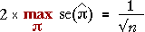

Confidence intervals vs margin of error
Use this diagram to explain the difference between the margin of error of an estimated proportion and its 95% CI.
Mention that the margin of error is the worse case '± value' for a 95% CI. It is often used to summarise accuracy of opinion polls where there are several proportions of interest — the same margin of error applies to the whole poll whereas a separate '± value' would be needed for each proportion if 95% CIs were used. The margin of error is:

Firstly drag the slider to see how the width of the 95% CI depends on p. Observe that
Select Margin of error and again drag the slider. Observe that